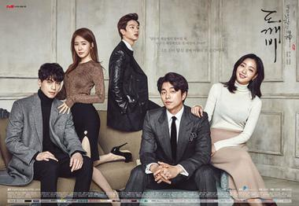

My Favorite Drama
My favorite activity is watching dramas and movies, especially Korean dramas.
This is because, Korean dramas have various genres such as historical, political,
action, medical, thriller, suspense, melodrama, romantic and so on.
Apart from the good looking male and female characters, these Korean dramas
also have many lessons that can be taken as examples.
For example, a medical genre drama. They perform the correct procedures in the process of surgery,
medicine and so on in the drama. In this case, the drama also can give the audience new knowledge
and to know various information such as knowing the name of the disease, medicines and so on.
Not only that, Korean dramas also have an interesting plot and storyline for me to watch it.
So, below is a list of my favorite Korean dramas
1. Moon Lovers: Scarlet Heart Ryeo (2016)
I really like this drama. This drama has historical, romance, fantasy, melodrama and time
travel genres. This drama tells the story of Go Ha-jin / Hae So, is transported back in time to
the Goryeo Dynasty. She wakes up in the year of 941 in the body of Hae Soo, among the
many royal princes of the ruling Wang family during the reign of King Taejo. As long as I
watch this drama, I feel very excited at first, but in the middle of this drama, many characters
have died. This has made me feel sad. This drama also has many suspens elements that
make me want to watch episode to another episode.This drama starring by Lee Joon Gi and Lee Ji Eun (IU).
You can click image to watch a trailer
Click here to watch full episodes Moon Lovers: Scarlet Heart Ryeo
2. Uncontrollably Fond (2016)
For me, this drama is very sad from the beginning to the last episode because
the lead actor character in this drama has cancer. Basically, Uncontrollably Fond is about Shin Joon-young,
a famous actor struggling with illness. Because he is famous, everything he does is always noticed by everyone, e
specially his fans, but he works hard to hide his illness. The drama also shows the conflict that between
Joon Young and his motherThis genre of drama is melodrama.This drama is starring by Kim woo bin and Suzy
You can click image to watch a trailer
Click here to watch full episodes Uncontrollably Fond
3. W: Two Worlds (2016)
I really like the concept and plot of this drama which is about two worlds,
the comic world and the real world. The drama begins when the heroine suddenly enters the computer
screen which is the world of comics. In that world, she has met the hero of this drama and
eventually she falls in love with the hero. Just like other dramas, this drama also makes me
addicted to watching the next episode and beyond. The genre of this drama is fantasy, suspense, thriller
and supernatural gothic. The drama is starring Lee Jong Suk and Han Hyo Joo.
You can click image to watch a trailer
Click here to watch full episodes W: Two World
 4. Hotel Del Luna (2019)
4. Hotel Del Luna (2019)
This drama is very unique because it tells the story of a hotel located in Seoul,
and different from other hotels which is the customers are all ghosts, and it cannot be seen in its true form
during the day. Jang Man Wol as the owner of Hotel Del Luna and Ku Chan-Seong who had to become a manager at the hotel
due to an agreement that was made by his father when he was a child. The genre of this drama is dark fantasy
and romantic comedy starring Lee Ji Eun (IU) and Yeo Jin Goo. This drama is so good that i watched it many times.
You can click image to watch a trailer
Click here to watch full episodes Hotel Del Luna

5. Guardian: The Lonely and Great God-Goblin (2016)
Just like Hotel Del Luna, this drama also has a fantasy genre. Not only that,
this drama is in the romance genre. This drama is a story about a goblin played by Gong Yoo who was a
military general in Goryeo era was killed by the king. A few years after he died, he was resurrected and became a goblin.
To live longer in the world, he is not allowed to help and interfere in human affairs on earth.
The drama is starring Gong Yoo and Kim Go Eun. This drama becomes more interesting because of its beautiful cinematography.
You can click image to watch a trailer
Click here to watch full episodes Guardian: The Lonely and Great God-Goblin